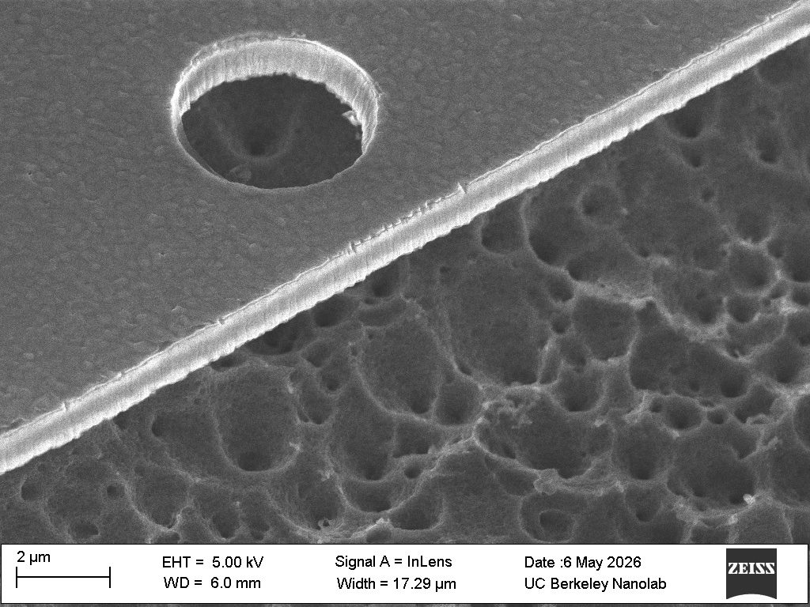
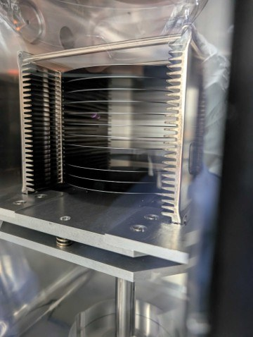
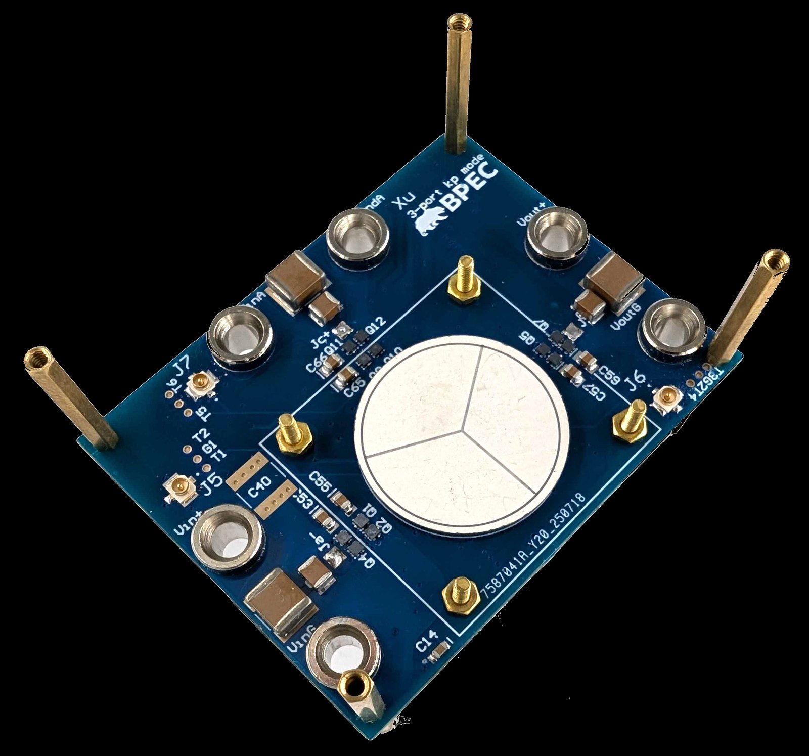
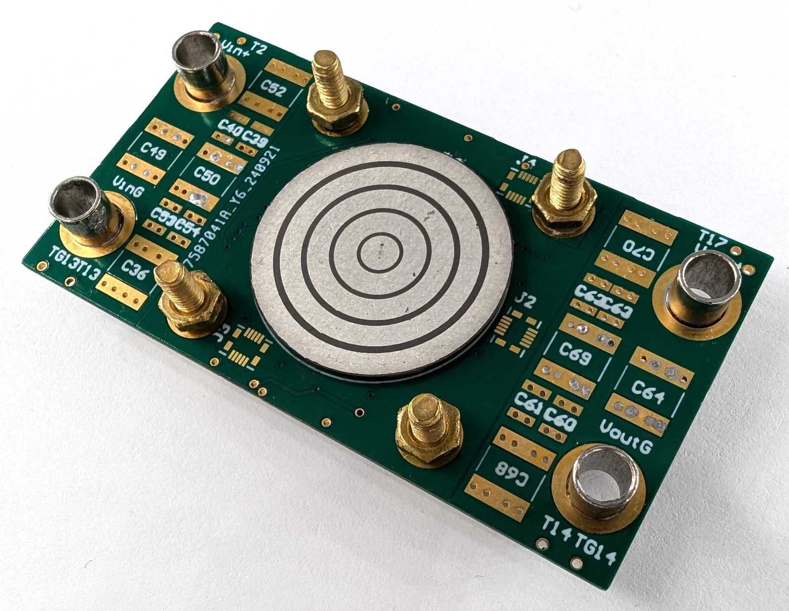

I build power converters out of vibrating piezoelectric components instead of magnetics.
I am a PhD candidate in EECS at UC Berkeley, working with Prof. Jessica Boles on bulk and thin-film piezoelectric components for power conversion. My research spans power electronics, MEMS design and microfabrication: I model multi-port and overtone piezoelectric components, design and solder power converters that exploit their potential, and also design and fabricate thin-film piezoelectric devices at Marvell Nanolab at UC Berkeley.
Before Berkeley, I earned a BSE from the University of Michigan and a BSE from Shanghai Jiao Tong University, where I also minored in mathematics at UM and IP law at SJTU.
News
- Our new paper was accepted to IEEE MEMS 2027 as an oral presentation. See you on the Big Island of Hawaii!
- “Overtone Piezoelectric Resonators for Power Conversion” is published in IEEE Transactions on Power Electronics.
- Received the EECS Evergreen Graduate Research Award for undergraduate mentorship.
- Received the EECS Demetri Angelakos Memorial Achievement Award.
- Three papers presented at APEC 2026 in San Antonio; Ben Karish received a Technical Session Best Presentation Award.
- Innovation Award in the Lab-in-Fab Piezo MEMS Design Challenge, announced at IEEE MEMS 2026.
Research
Overtone piezoelectric resonators. Operating a piezoelectric resonator at a higher-order mode decouples its electrical characteristics from its thickness, opening a new design space for high-frequency, high-power-density converters. This work received the COMPEL 2024 Best Paper Award and is now in IEEE Transactions on Power Electronics.
Multi-port piezoelectric components. A single piezoelectric body with several electrode ports can act as a transformer, a resonator, and a power splitter at once. I develop approachable circuit models for these components, extend them to overtone operation, and use them to build differential power processors in which the piezoelectric element itself routes the mismatch power between ports.
Converter topologies and applications. New components call for new circuits. I design converter topologies around piezoelectric resonators and transformers, including switched-resonator and overtone-reconfigurable converters, and apply them where magnetics are the bottleneck: mismatched solar panels, battery balancing, and general DC systems that need compact, efficient partial power processing.
Piezoelectric materials. Synthesis and characterization of piezoelectric materials for power conversion, where loss, coupling, and power-handling limits matter more than the sensing and actuation figures of merit the materials are usually judged by.
Piezo MEMS for power. Design and fabrication of thin-film piezoelectric MEMS devices for power conversion at the Berkeley Nanolab, from wafer processing through released structures and prototype boards.




Publications
2026
- Overtone Piezoelectric Resonators for Power ConversionW. Xu, S. Naval, M. Touhami, J. D. BolesIEEE Transactions on Power Electronics, Aug. 2026
- Differential Power Processing Using a Multi-Port Piezoelectric ComponentW. Xu, S. Naval, J. D. BolesIEEE Applied Power Electronics Conference and Exposition (APEC), San Antonio, Mar. 2026
- An Overtone-Reconfigurable Piezoelectric-Based Power Converter for Wide Load Range ApplicationsB. Halfmann, W. Xu, J. D. BolesIEEE APEC, San Antonio, Mar. 2026
- Modeling and Analysis of Piezoelectric-Resonator-Based Power Converters with Finite Terminal CapacitanceB. Karish, W. Xu, J. D. BolesIEEE APEC, San Antonio, Mar. 2026Technical Session Best Presentation Award
- High-Efficiency Isolated Piezoelectric Transformers for Magnetic-less DC-DC Power ConversionS. Naval, W. Xu, M. Touhami, J. D. BolesIEEE Transactions on Power Electronics, Jan. 2026
2025
- Approachable Modeling of Multi-port Piezoelectric Components for Power ConversionW. Xu, S. Naval, J. D. BolesIEEE Workshop on Control and Modeling for Power Electronics (COMPEL), Knoxville, Jun. 2025
- Overtone Piezoelectric Transformers for Magnetic-less Power ConversionS. Naval, W. Xu, M. Touhami, J. D. BolesIEEE COMPEL, Knoxville, Jun. 2025
- High-Efficiency Isolated Piezoelectric Transformers for Magnetic-less DC-DC Power ConversionS. Naval, W. Xu, M. Touhami, J. D. BolesIEEE APEC, Atlanta, Mar. 2025Technical Session Best Presentation Award
2024
- Overtone Piezoelectric Resonators for Power ConversionW. Xu, S. Naval, M. Touhami, J. D. BolesIEEE COMPEL, Lahore, Jun. 2024COMPEL 2024 Best Paper Award
2022
- Lite-Sparse Hierarchical Partial Power Processing for Heterogeneous Degradation of Batteries in Energy Storage SystemsA. Ramyar, W. Xu, X. Cui, J. Siegel, A. Stefanopoulou, A.-T. AvestruzIEEE Energy Conversion Congress and Exposition (ECCE), Detroit, Oct. 2022
- High-Speed Digital Control in a Switching-Synchronized Sampled-State Space for Variable Frequency Multi-Phase Buck ConvertersX. Cui, V. Contreras, W. Xu, A.-T. AvestruzIEEE COMPEL, Tel Aviv, Jun. 2022
Patents
- 2026
- Dickson Switched-Resonator DC-DC ConverterU.S. Provisional No. 64/027305 · J. D. Boles, W. Xu · UC Berkeley
- 2026
- Overtone Piezoelectric Resonators for Power ConversionInternational Patent PCT/US2025/033838 · J. D. Boles, W. Xu · UC Berkeley
- 2025
- Power Converter InterconnectionInternational Patent PCT/US2023/075703 · A.-T. Avestruz, X. Cui, V. Contreras, W. Xu · University of Michigan
- 2024
- Power Converter Frequency ControlU.S. Pub. No. 20230412061 · A.-T. Avestruz, X. Cui, A. Ramyar, W. Xu, J. Siegel, A. Stefanopoulou · University of Michigan
Honors
- 2026
- EECS Evergreen Graduate Research Award, UC BerkeleyFor undergraduate mentorship
- 2026
- EECS Demetri Angelakos Memorial Achievement Award, UC Berkeley
- 2026
- Innovation Award, Lab-in-Fab Piezo MEMS Design ChallengeAnnounced at IEEE MEMS 2026
- 2024
- Best Paper Award, IEEE COMPEL 2024
- 2023
- Robert G. Meyer Fellowship, UC Berkeley
- 2023
- EECS Undergraduate Outstanding Research Award, University of Michigan
- 2020–22
- Junyuan Scholarship, Shanghai Jiao Tong University
- 2022
- Roger King Scholarship, University of Michigan
- 2021
- Cheng Family Scholarship, University of Michigan
- 2021
- Silver Medal, 2020 University Physics Competition
- 2020
- John & Jane Sunshine Scholarship, Shanghai Jiao Tong University
Education
- 2023–
- PhD, Electrical Engineering and Computer Sciences, University of California, BerkeleyAdvisor: Prof. Jessica Boles
- 2023–25
- MS, Electrical Engineering and Computer Sciences, University of California, BerkeleyThesis: “Overtone Piezoelectric Resonators for Power Conversion”
- 2021–23
- BSE, Computer Engineering, University of MichiganMinor in Mathematics
- 2019–23
- BSE, Electrical and Computer Engineering, Shanghai Jiao Tong UniversityMinor in IP Law